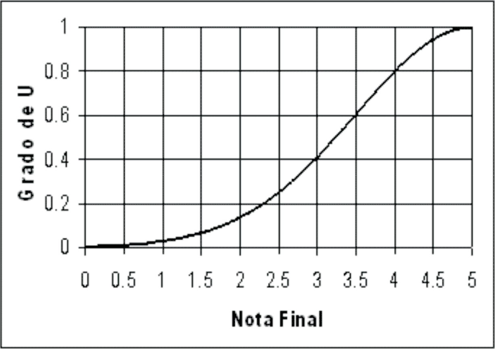
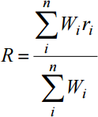

Inteligencia Computacional
Máster Universitario en Ingeniería Informática
Germán Martínez Maldonado

Introducción: lógica difusa en la educación
- Generalmente la evaluación de un alumno se realiza unicamente mediante una dimensión: una nota final.
- Problema: ¿Qué hacer cuando un alumno está cerca del umbral de aprobar?
- Idea: Usar más variables que no sean exclusivamente cuantitativas
Introducción: lógica difusa en la educación
- Artículo estudiado: Calificación de estudiantes por medio de un sistema de lógica difusa
- Iván Darío Gómez Araújo
- Jabid Eduardo Quiroga Méndez
- Neyid Mauricio Jasbón Carvajal
- Profesores de la Universidad Industrial de Santandar, Bucaramanga (Colombia)
Marco teórico
- Lógica difusa: mecanismo para interpretar una información en un entorno ambiguo
- Casos concretos: "estudiante deficiente" o "estudiante excelente"
Conjuntos difusos y funciones de pertenencia
- X, una colección de objetos x
- X = {x1, x2, ..., xn}
- Subconjunto difuso de A en X, conjunto de pares ordenados
- A = {x|µA(x), x∈X}
- Función de permanencia de x en A
- µA(x)
- Define conjunto difuso indicando grado de pertenencia del elemento x en el subconjunto A
Conjuntos difusos y funciones de pertenencia
Ejemplo: grado de pertenencia de un estudiante al conjunto "estudiante excelente" en función de su nota final
- Eje horizontal: nota final del alumno [0-5]
- Eje vertical: grado de pertenencia del alumno al conjunto "estudiante excelente" [0-1]
Conjuntos difusos y funciones de pertenencia
Conjuntos difusos y funciones de pertenencia
Por cada conjunto difuso que se cree, se estará construyendo también una función de pertenencia a dicho conjunto en base al criterio oportuno.
Variables lingüisticas
- Modelo matemática muy ineficiente para modelar el conociento
- Representaciones lingüisticas se adaptan mucho mejor
Variables lingüisticas
Ejemplo: rango de notas [0-10]; definir "malo", "normal" y "bueno" para clasificar a los alumnos.
- malo: { 1|1.0, 2|0.8, 3|0.4, 4|0.1, 5|0.0 }
- normal: { 2|0.1, 3|0.4, 4|0.8, 5|1.0, 6|0.8, 7|0.4, 8|0.1 }
- bueno: { 5|0.0, 6|0.1, 7|0.4, 8|0.8, 10|1.0 }
Operaciones aritméticas difusas
Para unos conjuntos A y B
- A = {µ(i) Ii}
- B = {µ(j) Ij}
Definimos las siguientes operaciones básicas:
- Suma: A+B = max{min(µA(i), µB(j) l[i+j])}
- Producto: A·B = max{min(µA(i), µb(j) l[i·j])}
- División: A⊕B = max{min(µA(i), µb(j) l[i⊕j])}
Codificación
Peso promedio difuso
Mediante las operaciones aritméticas anteriores se calculará el peso de las distintas notas respecto a la nota final.
Codificación
Distancia entre conjuntos
- El peso promedio es un conjunto difuso que necesitaremos transformar al lenguaje natural
- Calcular la distancia entre el conjunto resultante y el conjunto base de las expresiones del lenguaje natural
- En este experimento se ha usado el método de Hamming
Decodificación
- Resultado: variables lingüisticas
- Transformar en resultados escalares cuantificables
- En este experimento se ha usado el método del centro de gravedad y0(B)
- y0(B): media de los pesos de todo el supp(B) (elementos del conjunto con funciones de pertenencia > 0)
- card(B): suma de las funciones de pertenencia µB(y)
- B: salida difusa
- µB: función de pertenencia
Sistema de inferencia difusa
Al evaluar unas entradas mediante reglas de lógica difusa obtendremos unas salidas concretas.
Usado el método de inferencia difuso de Mamdani:
- Transformar variables entrada de escalares a lingüísticas
- Aplicar operadores difusos AND y OR en el antecedente (IF)
- Determinar consecuencias (THEN) de cada reglas
- Agregar las salidas de reglas para obtener salida del sistema
- Decodificar salida para obtener valor exacto usando método centro de gravedad